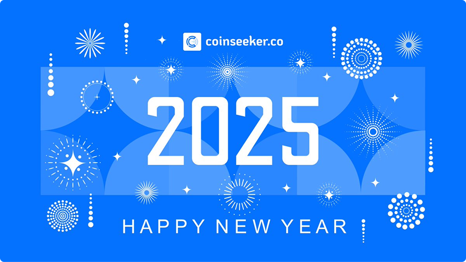

Revenue Increased!
5000% faster revenue ramp from earlier launch + user adoption
Coinseeker is a comprehensive crypto intelligence platform that tracks funding rounds, investors, and market sectors. They needed a dedicated team to build a scalable, real-time data platform that could handle massive volumes and grow with their user base.
Visit website →Released
Feb 2023
Client
Coinseeker
Feature Usage
Analytics, Autocomplete, Tracking, Instant Search, Search API
Key Results
Acquired by Titan Lab for $30M, 8,600+ funding rounds tracked
Collaboration Type: Dedicated Team
Cyberk provided a dedicated development team that worked as an extension of Coinseeker's product organization. Our engineers were fully embedded in their workflows, attending daily standups and collaborating directly with stakeholders to iterate rapidly on features.
Challenge
Coinseeker needed to process and display real-time cryptocurrency data across thousands of tokens, funding rounds, and investor profiles. The platform had to handle large volumes of constantly changing data while maintaining sub-second search performance. Security was paramount given the financial nature of the data, and the team needed to ship fast enough to capture market timing.
Services Provided
Cyberk assembled a cross-functional team of frontend engineers, backend developers, and QA specialists who hit the ground running. We architected a scalable data pipeline capable of ingesting and indexing real-time market data, and built an instant search system with autocomplete that could query across millions of records.
Our team also implemented comprehensive analytics tracking, user engagement features, and a robust API layer that powers both the web platform and third-party integrations. Every feature was built with security best practices and optimized for performance at scale.

Results & Achievements
The partnership delivered exceptional outcomes for Coinseeker:
- Acquired by Titan Lab at a valuation of $30 million
- Platform tracked over 8,600 funding rounds, 9,000 investors, and 7,000+ sectors
- 5000% faster revenue ramp compared to projected in-house development timeline